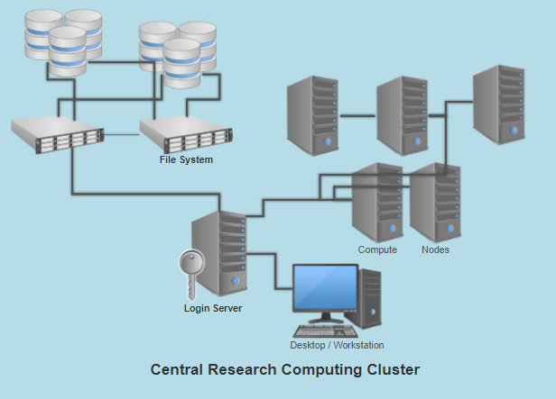
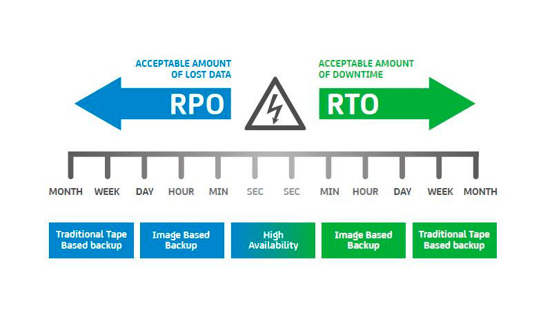

Arquitectura de Clústeres y Planes de Continuidad del Negocio
Autor: Jhon Jairo Mejia Avila – Aprendiz SENA
Programa: Tecnólogo en Análisis y Desarrollo de Software - 2885525
Fecha: Septiembre 2025
Introducción
En el contexto de la industria del software, la alta disponibilidad, la continuidad del negocio y la recuperación ante desastres son aspectos críticos.
Las arquitecturas de clústeres permiten mantener los servicios en funcionamiento incluso frente a fallas.
Este documento describe los conceptos fundamentales de clústeres, análisis de riesgo e impacto, gestión de prioridades, RPO, RTO, gestión de crisis y pruebas de operación, vinculándolos con el desarrollo de software y la administración de infraestructura.

Objetivo
Presentar de forma clara los conceptos relacionados con arquitecturas de clústeres y las estrategias de continuidad del negocio en el área de análisis y desarrollo de software, describiendo sus características, tipos, ventajas y desventajas.
Desarrollo
1. Arquitectura de Clústeres
Un clúster es un conjunto de servidores o nodos interconectados que trabajan como una sola unidad lógica para ofrecer alta disponibilidad, balanceo de carga o procesamiento paralelo.
Herramientas y tecnologías usadas en una arquitectura de clústeres:
Alta disponibilidad (HA): garantiza continuidad del servicio.
Balanceo de carga: distribuye el tráfico entre varios nodos.
Computación de alto rendimiento (HPC): para cálculos intensivos.
Clúster de almacenamiento: enfocado en la gestión de datos.
Tipos de procesamiento
Paralelo: varias tareas simultáneas.
Distribuido: diferentes nodos procesan datos en diferentes ubicaciones.
Ventajas
Continuidad del servicio y reducción de tiempo de inactividad.
Mayor rendimiento y escalabilidad.
Flexibilidad en el uso de recursos.
Desventajas
Costo de implementación y mantenimiento.
Complejidad en la administración.
Requiere personal capacitado.
2. Conceptos clave de continuidad del negocio
Análisis de riesgo: Identificación de amenazas que pueden afectar la infraestructura o el software.
Análisis de impacto: Determina consecuencias económicas y operativas ante interrupciones.
Gestión de prioridad: Clasifica servicios críticos para restaurarlos primero.
Recuperación de desastres (DR): Estrategias y procedimientos para restaurar operaciones tras un incidente.
RPO (Recovery Point Objective): Punto máximo de datos que se puede perder medido en tiempo.
RTO (Recovery Time Objective): Tiempo máximo aceptable para restablecer el servicio.
Planes de continuidad del negocio (BCP): Políticas y acciones para mantener operaciones durante y después de una crisis.
Gestión de crisis: Coordinación de acciones para mitigar el impacto.
Pruebas de operación: Simulaciones y pruebas para verificar que los planes funcionen.

Conclusiones
El uso de clústeres y planes de continuidad del negocio son esenciales para garantizar la disponibilidad de los servicios de software en entornos críticos.
Implementar estrategias de recuperación, con objetivos claros de RPO y RTO, asegura que las organizaciones mantengan la operación aun frente a incidentes graves.